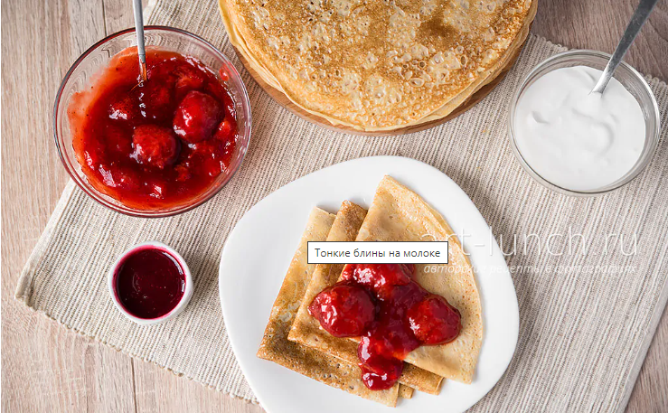
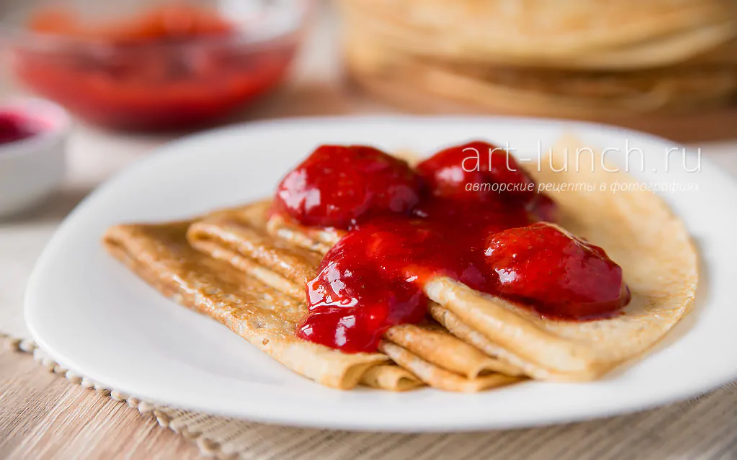

Тонкие блины

Ингредиенты
- молоко 500 мл
- мука 200 г
- яйца 3 шт.
- Сахар - 2 столовые ложки
- Соль - 0,5 чайной ложки
- масло сливочное (или растительное) 30 г (2 ст. ложки)
Способ приготовления
Сегодня мы с Вами приготовим блинчики, которые можно быстро приготовить на завтрак для своей семьи.
- Яйца хорошо моем, выбиваем в ёмкость для взбивания, добавляем сахар (30 г или 2 ст. ложки) и соль (1/2 ч. ложки).
- Добавляем к яичной массе небольшую часть молока, где-то 100-150 мл.
- Просеиваем муку (200 г) в ёмкость с тестом.
- Наливаем остывшее растопленное сливочное или растительное масло в тесто.
- В зависимости от нагрева вашей конфорки, может потребоваться разное время на жарку одного блина. Переворачивать блин следует, когда тесто сверху схватится и перестанет быть липким, а края начнут чуть-чуть темнеть
- Приятного аппетита!
рецепты сырников

Лучше всего блинчики подавать теплыми со сметаной, сгущенкой или вареньем.